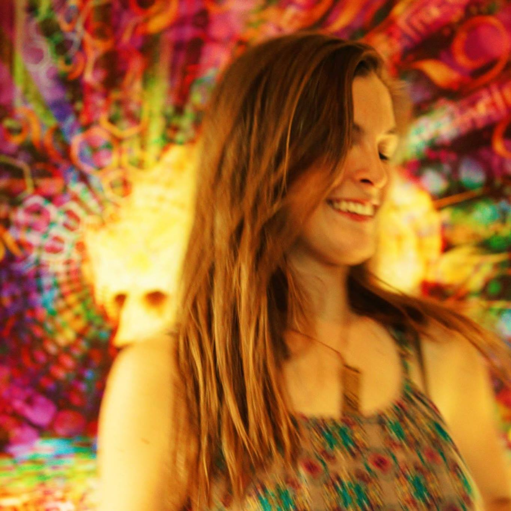
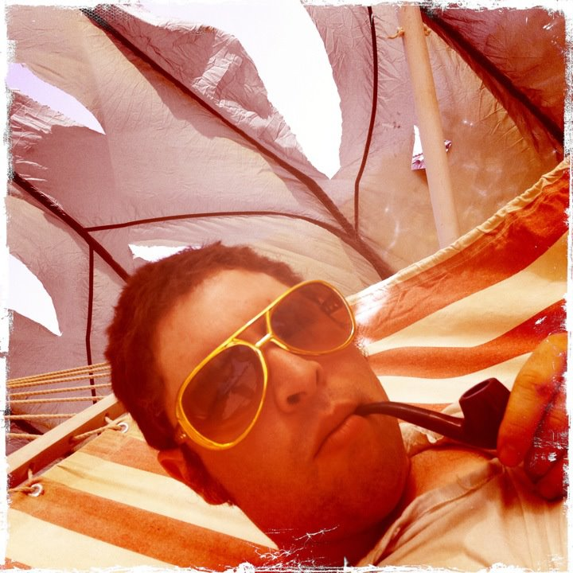

We implemented our web application using HTML, CSS

JavaScript,
JSON,

And Jquery

We utilized the Bootstrap library to supplement our css, and to help give a more polished look to the site
All Grateful Dead information was dynamically displayed with calls through the Archive.org api
About Madeleine:
Madeleine is currently studying Computer Science at Portland State University. She works at a local outdoor store in Portland, Oregon. Her hobbies include hiking, skiing, and supporting live music.
Madeleine has volunteered for the past seven years at Northwest String Summit. She's looking forward to what the future brings!
Take me to Madeleine's LinkedIn ↬
About Issac:
Issac is also studying Computer Science at Portland State University. He is a full-time parent to a toddler and caters on the weekends. His hobbies include hiking, baking, and fossil hunting.
His flexibility, enthusiasm, and commitment to the unique puzzle-like orientation of computer programming makes this field ideally suited to his personality